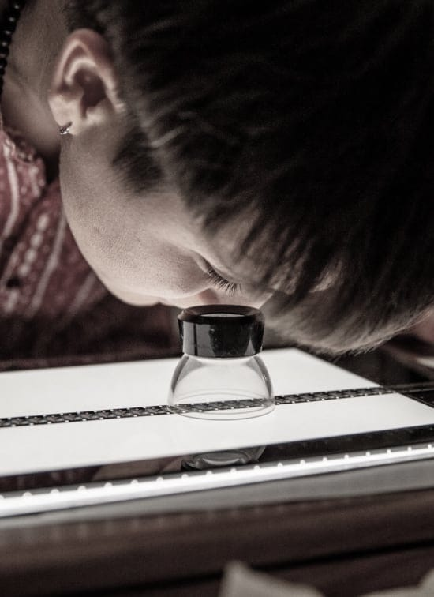
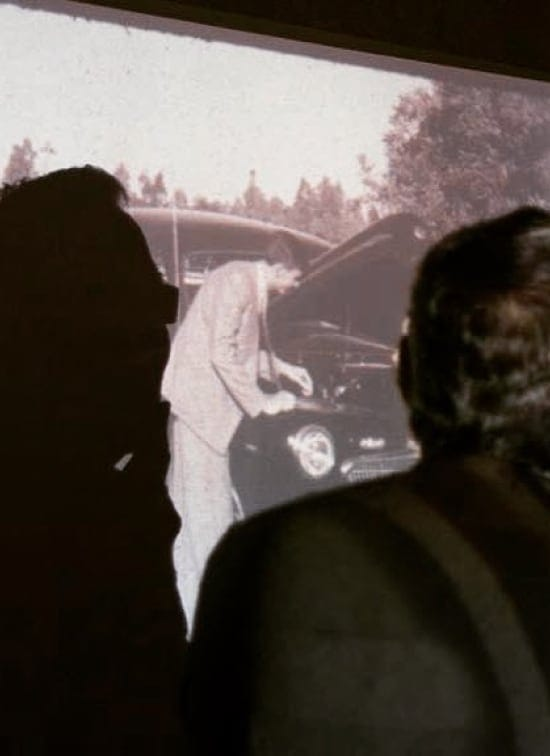

Experiencias que reconectan con el pasado,
la comunidad, la memoria y la identidad.
Somos Cine Casero, un colectivo abocado a la
preservación de registros audiovisuales familiares.
Historias reales que
transmiten nuestra esencia
-
...“este registro me permite encontrarme de una forma diferente directamente con él”...
-
...“me parece sentir la textura del pantalón de paño de mi madre”...
-
...“creo que las películas son ese movimiento latente, que está ahí siempre”...
-
...“cine casero es necesario por lo que representa”...
-
...“mi padre después de que se hizo esta película me llevó a verla”...
-
...“es muy lindo ver como cuidan y disfrutan las películas familiares”...
Home
Movie Day
El Día de las Películas Familiares es un evento abierto y gratuito que se celebra a nivel internacional y que es organizado por voluntarios que buscan llamar la atención sobre la importancia de preservar los registros amateurs, cotidianos y domésticos por el valor que tienen para la memoria colectiva y el patrimonio cultural de un país.
TIPS PARA CONSERVAR TU ARCHIVO FAMILIAR
DISEÑO DE CONTENEDOR PARA TUS PELÍCULAS
- 

- 
Film Performances · Film Performances · Film Performances · Film Performances ·
Film Performances · Film Performances · Film Performances · Film Performances ·
foundfootage en 16mm y Super 8mm.
Diseñamos proyecciones multipantalla, en
soporte fílmico, que son sonorizadas y
musicalizadas en vivo.
Ponemos en relación viejas películas
publicitarias, de ficción, familiares,
institucionales, animadas, que son reutilizadas
en un nuevo contexto narrativo y semiótico para
generar nuevas experiencias e historias.
El Gran Film de Uruguay
Proyecto de inspección y puesta en valor de la Colección de nitratos del Fondo Carlos Alonso.Custodiada por el Archivo Nacional de la Imagen y la Palabra - SODRE, se compone de aproximadamente 40 latas de película. Rodadas en varias ciudades y paisajes de todo el país en la década de 1930, en forma de registro documental. La colección no ha podido ser estudiada en profundidad hasta el momento, por lo que el colectivo se propone llevar a cabo una inspección técnica y registro fotográfico exhaustivos para aportar al diagnóstico del estado de conservación de la colección y a su preservación.
El Gran Film del Uruguay cuenta con el apoyo del Programa de Archivos Modernos en
Peligro de la Biblioteca de UCLA con fondos de Arcadia, un fondo benéfico de Lisbet Rausing
y Peter Baldwin y el apoyo de instituciones referentes del país.
Somos un colectivo unido, comprometido y abierto a la comunidad. Nos representan el trabajo en equipo, los procesos creativos y lo de investigacion.

Sobre
Nosotros
Cine Casero es un colectivo abocado a la preservación de la memoria colectiva que nace en 2014 con el objetivo de celebrar por primera vez en Uruguay “El día de las películas familiares” (Home Movie Day).
Nos interesa involucrar, entusiasmar y formar a las propias comunidades para que puedan atender la problemática de la preservación audiovisual de su memoria colectiva.
CINE CASERO SOMOS
-
Julieta Keldjian
Se dedica a la docencia universitaria y a la investigación en estudios del cine y medios.
-
Macarena Fernández Puig
Se dedica a la gestión de colecciones audiovisuales y es documentalista.
-
Carolina Curti
Es licenciada en comunicación social con formación en audiovisual y fotografía y docente.
-
Felipe Bellocq
Es licenciado en ingeniería audiovisual y se desarrolla como realizador e investigador.
-
Nico Soto
Se formó en dirección de fotografía y trabaja como realizador audiovisual y músico.
El colectivo trabaja principalmente en la preservación y el acceso audiovisual. Se plantea como objetivo difundir buenas prácticas de conservación en la comunidad, para que los archivos personales y familiares sobrevivan para las futuras generaciones.
Por eso investiga, rescata y recupera el valor de los registros audiovisuales de la vida cotidiana; películas domésticas y cine amateur que forman parte de nuestro patrimonio cultural. Se trata de materiales que muchas veces no han sido atendidos por las instituciones archivísticas, porque no se ajustan a las convenciones de lo que se considera patrimonio audiovisual o porque no cuentan con el conocimiento y la infraestructura adecuada para cuidarlos.
Nuestros
servicios
Somos profesionales que venimos del campo de comunicación, la ingeniería audiovisual y la conservación de archivos audiovisuales y fotográficos.
Almacenamiento, preservación y gestión de colecciones audiovisuales en soporte fotoquímico, magnético y digital.
Realizamos evaluaciones de identificación, catalogación y diagnóstico para preservación de colecciones audiovisuales. Buscamos mejorar las condiciones de preservación de los soportes para palear su degradación y brindamos asesoramiento sobre las posibles vías de digitalización del material.
Diseño de estructuras de almacenamiento, prácticas y acordes a las necesidades y requerimientos de cada proyecto. Clasificación e identificación de material, acceso, back-ups.
Gestión de archivos audiovisuales personales y familiares, conocimientos de herramientas y técnicas de almacenamiento, conservación, preservación, acceso y back ups de material.
Diseñamos experiencias audiovisuales performáticas, analógicas y multipantalla, a partir de material encontrado (found footage) que son sonorizadas y musicalizadas en vivo. Ponemos en relación distintos materiales y soportes - 16mm, super 8mm, diapositivas- que son reutilizadas en un nuevo texto narrativo y semiótico, para generar nuevas experiencias e historias.
Documentación de material audiovisual y fotográfico contemporáneo e histórico para: investigaciones académicas y artísticas, obras documentales, de ficción y audiovisuales en general.
¿Querés colaborar
con nosotros?
Somos un colectivo autogestionado e independiente. Si queres podes colaborar con nuestro
trabajo a través de donaciones de películas, equipos de proyección y recursos económicos.